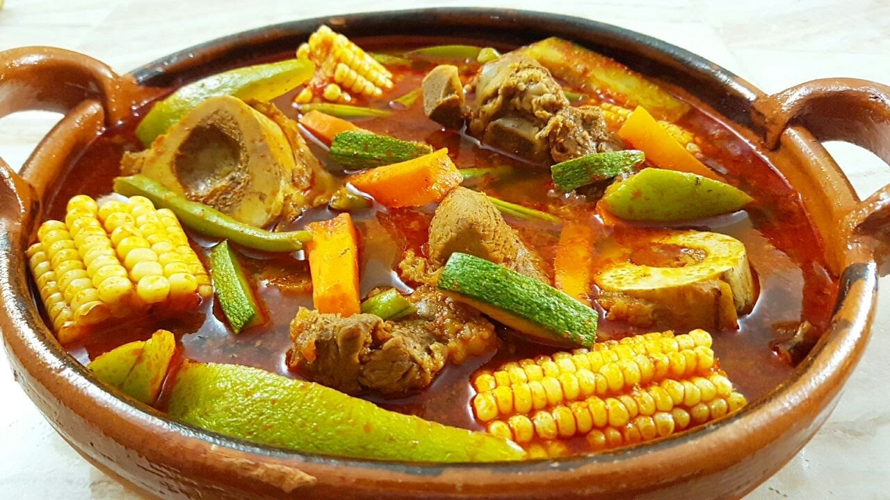

Este Mole de olla no puede faltar en tu recetario. Aprende a hacer la receta de la abuela de manera fácil, rápida y sobre todo, deliciosa.

Resultado de la preparación.
INGREDIENTES:
Para 4 personas
- 1/2 kg Chambarete
- en trozos 1/2 kg Retazo de res
- en trozos 2 Huesos de tuétano
- 1/2 Cebolla
- 1/2 cabeza de ajos
- 2 Elotes
- cortados en cuartos 2 xoconostles
- sin piel y sin semillas y cortados en sextos 1 Chayote
- pelado y en cubos medianos 200 gr Elotes
- en tercios 1 Papa grande
- en cubos medianos 1 Calabaza grande
- en medias lunas 2 zanahorias
Para la salsa:
- en medias lunas 1/4 Cebolla
- 2 dientes Ajos
- 2 Chiles ancho
- desvenados y sin semillas 1 Chile pasilla
- desvenado y sin semillas 2 Chiles guajillo
- desvenados y sin semillas 3 jitomates
- en mitades 3 cucharadas Aceite
- 2 ramas Epazote
Para los Choyotes:
- 200 gr Masa de maíz
- 1 cucharadita Aceite
- 1 cucharada Epazote finamente picado
- Sal al gusto
PROCEDIMIENTO:
- Coloca la carne, la cebolla y cubre con agua.
- Añade sal y cocina por 30 minutos en una olla de presión a partir de que suelte vapor.
- Retira la cebolla y los ajos.
- Añade los elotes y el xoconostle.
- Cocina por 20 minutos.
Para la salsa:
- Calienta aceite en una cacerola y acitrona la cebolla y el ajo.
- Añade los chiles y cocina sin dejar de mover hasta que se doren.
- Agrega el jitomate y cocina por 10 minutos.
- Vierte un poco de agua y sal.
- Tapa y cocina por 10 minutos, deja enfriar.
- Licúa y cuela.
- Sofríe en una cacerola y reserva.
Para los choyotes:
- Mezcla la masa de maíz con el aceite, epazote y sal.
- Mezcla y forma bolitas de 2 centímetros.
- Haz un hueco con la yema de tu dedo, como si fuera una cazuelita.
- Reserva.
- Vierte la salsa al caldo y mezcla.
- Agrega las ramas de epazote y sazona de nuevo.
- Añade los chayotes y las papas.
- Cocina por 8 minutos.
- Agrega los ejotes y zanahorias.
- Tapa y cocina por 10 minutos más.
- Agrega los chochoyotes y cocina por 10 minutos o hasta que todo esté cocido.